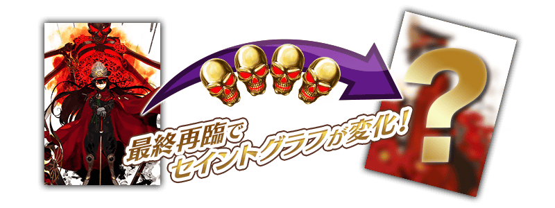
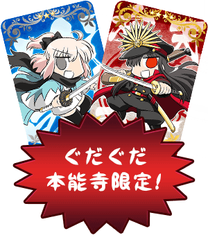
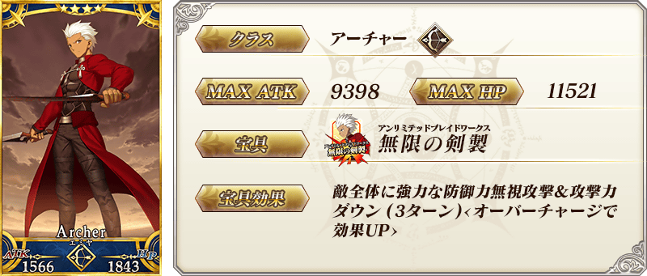
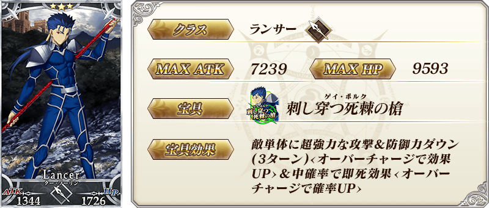
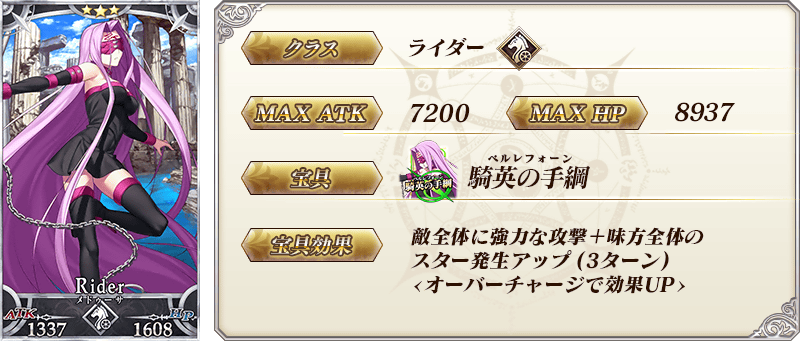

阿信：現在能免費拿到阿信！！咦？咱是免費的嗎！？
沖太：好像是收集活動點數什麼碗糕的就能得到！
阿信：但是伺服器會掛掉吧？
沖太：現在正是相信FGO之時！ぐだぐだ本能寺就此開幕！

◆活動舉辦期間◆
2015年11月25日（三）18：00～12月11日（五）12：59
※舉辦期間已延長。
◆活動概要◆
在迦爾帝亞之門突然出現的「ぐだぐだ本能寺」，織田信長參戰！
是Fateぐだぐだオーダー的作者，容易被搞混又不熟的経験値所寫的劇本！
當然，奈須きのこ(幾乎沒)監修！
是Fateぐだぐだオーダー的作者，容易被搞混又不熟的経験値所寫的劇本！
當然，奈須きのこ(幾乎沒)監修！
阿信：完蛋了不是きのこ。
沖太：監、監修還是十分感謝!!
★4(SR)Servant『織田信長』，在活動期間限定加入！
在期間內收集能以活動任務獲得的「本能寺點數」一定以上，就會正式加入！
最初也是最後(？)的ぐだぐだ活動，請各位積極參加！！

參加活動任務來獲得本能寺點數，就能拿到豪華報酬！
詳細如下。

◆實用攻略方法・其1◆
將特定的Servant放入特定隊伍中，「本能寺點數」的獲得數就會增加！
【對象Servant】
沖田總司、織田信長、Emiya、庫夫林（Lancer）、美杜莎、梅菲斯托費勒斯、牛若丸、武蔵坊弁慶
※每位Servant的增加數不同。
【對象Servant】
沖田總司、織田信長、Emiya、庫夫林（Lancer）、美杜莎、梅菲斯托費勒斯、牛若丸、武蔵坊弁慶
※每位Servant的增加數不同。

◆實用攻略方法・其2◆
裝備活動限定概念禮裝和限期概念禮裝，活動專用道具「平蜘蛛」「曜變天目茶碗」「九十九髮茄子」和「本能寺點數」的獲得數就會增加。
※請注意在各任務的道具掉落率並非100%。
※請注意在各任務的道具掉落率並非100%。

◆活動限定概念禮裝◆
★★★★★SSR
技能
ぐだお
ATK 500（最大：2000） HP 0（最大：0）技能
自身的Critical威力提升15%＆寶具威力提升15%＋本能寺點數的獲得量增加30%【『ぐだぐだ本能寺』活動期間限定】
沖太：沖田跟阿信終於參戰了！
阿信：雖然是夢但又不是夢呀！！
沖太：雖然不重要但阿信的數值被弱體化啦(笑)
阿信：沖田不用弱體化的糞數值(笑)
Fate/Grand Order 與最好的朋友一起


◆靈基再臨◆
使用活動期間中的道具交換以外無法入手的「黃金髑髏」，重複4次靈基再臨的話，卡面會有所變化！
※織田信長不會隨靈基再臨使戰鬥角色的外觀變化。
■能以活動期間限定拿到概念禮裝用EXP卡！
能大幅度強化概念禮裝的EXP卡在ぐだぐだ本能寺登場！
收集大量概念禮裝用EXP卡，無論如何請藉此機會，強化喜愛的概念禮裝！
收集大量概念禮裝用EXP卡，無論如何請藉此機會，強化喜愛的概念禮裝！

◆能用本能寺點數獲得的道具◆
【活動限定Servant】
★4（SR）「織田信長」
【活動限定概念禮裝】
★4（SR）概念禮裝EXP卡：ノッブ
★3（R）概念禮裝EXP卡：おき太
【靈基再臨素材】
鳳凰の羽根
竜の逆鱗
伝承結晶
【其他道具】
聖晶石
黄金の果実
200萬QP
100萬QP
50萬QP
★4（SR）「織田信長」
【活動限定概念禮裝】
★4（SR）概念禮裝EXP卡：ノッブ
★3（R）概念禮裝EXP卡：おき太
【靈基再臨素材】
鳳凰の羽根
竜の逆鱗
伝承結晶
【其他道具】
聖晶石
黄金の果実
200萬QP
100萬QP
50萬QP
◆報酬獲得方法◆
本能寺點數每達到一定數以上，任務結束時自動進行報酬獲得。
能獲得的報酬名單，可以在ターミナル出現的按鈕開啟「活動報酬畫面」確認。
能獲得的報酬名單，可以在ターミナル出現的按鈕開啟「活動報酬畫面」確認。
◆能用平蜘蛛獲得的道具◆
【活動限定概念禮裝】
★5（SSR）「ぐだお」
【靈基再臨素材】
黄金髑髏
蛮神の心臓
混沌の爪
無間の歯車
【11/25（水）18:00追記】
ホムンクルスベビー
隕蹄鉄
★5（SSR）「ぐだお」
【靈基再臨素材】
黄金髑髏
蛮神の心臓
混沌の爪
無間の歯車
【11/25（水）18:00追記】
ホムンクルスベビー
隕蹄鉄
◆能用曜變天目茶碗獲得的道具◆
【活動限定概念禮裝】
★5（SSR）「ぐだお」
【靈基再臨素材】
黄金髑髏
禁断の項
八連双晶
虚影の塵
★5（SSR）「ぐだお」
【靈基再臨素材】
黄金髑髏
禁断の項
八連双晶
虚影の塵
◆能用九十九髪茄子獲得的道具◆
【活動限定概念禮裝】
★5（SSR）「ぐだお」
【靈基再臨素材】
黄金髑髏
【各種卡片】
太陽のフォウくんALL★3（HP）
星のフォウくんALL★3（ATK）
叡智の猛火ALL★4（SR）
叡智の大火ALL★3（R）
★5（SSR）「ぐだお」
【靈基再臨素材】
黄金髑髏
【各種卡片】
太陽のフォウくんALL★3（HP）
星のフォウくんALL★3（ATK）
叡智の猛火ALL★4（SR）
叡智の大火ALL★3（R）

◆ぐだぐだ本能寺PickUp召喚期間◆
期間：2015年11月25日(三) 18:00 ～ 12月11日(五) 12:59
※舉辦期間已延長。
以期間限定舉辦ぐだぐだ本能寺Pick Up召喚！
在活動大活躍無誤的「★5（SSR）沖田総司」以期間限定登場！在活動放入隊伍中會讓「本能寺點數」獲得數增加。
還有，同樣會讓「本能寺點數」獲得數增加的「★4（SR）Emiya」、「★3（R）庫夫林（Lancer）」、「★3（R）美杜莎」、「★3（R）梅菲斯托費勒斯」的出現率也會提升！
※沖田總司在ぐだぐだ本能寺PickUp召喚期間結束後，不會追加到故事召喚。
另外，裝備期間限定概念禮裝「★5（SSR）ぐだぐだ看板娘」、「★4（SR）打ち上げオーダー！」、「★3（R）Fate ぐだぐだオーダー」，活動專用道具的獲得數也會提升。
在Pick Up期間中，期間限定Servant、期間限定概念禮裝、Pick Up4位Servant出現機率提高！
10次召喚★4(SR)以上1枚確定和★3(R)以上的Servant1位確定！
※★4(SR)以上確定包括Servant和概念禮裝。
※舉辦期間已延長。
以期間限定舉辦ぐだぐだ本能寺Pick Up召喚！
在活動大活躍無誤的「★5（SSR）沖田総司」以期間限定登場！在活動放入隊伍中會讓「本能寺點數」獲得數增加。
還有，同樣會讓「本能寺點數」獲得數增加的「★4（SR）Emiya」、「★3（R）庫夫林（Lancer）」、「★3（R）美杜莎」、「★3（R）梅菲斯托費勒斯」的出現率也會提升！
※沖田總司在ぐだぐだ本能寺PickUp召喚期間結束後，不會追加到故事召喚。
另外，裝備期間限定概念禮裝「★5（SSR）ぐだぐだ看板娘」、「★4（SR）打ち上げオーダー！」、「★3（R）Fate ぐだぐだオーダー」，活動專用道具的獲得數也會提升。
在Pick Up期間中，期間限定Servant、期間限定概念禮裝、Pick Up4位Servant出現機率提高！
10次召喚★4(SR)以上1枚確定和★3(R)以上的Servant1位確定！
※★4(SR)以上確定包括Servant和概念禮裝。








★★★★★SSR
技能
ぐだぐだ看板娘
ATK 0（最大：0） HP 750（最大：3000）技能
賦予自身目標集中狀態(3回合)＆攻撃力提升60%(3回合)＋平蜘蛛的掉落獲得量增加1個【『ぐだぐだ本能寺』活動期間限定】

★★★★SR
技能
打ち上げオーダー！
ATK 400（最大：1500） HP 0（最大：0）技能
自身的Quick卡性能提升10%＆Buster卡性能提升10%＋曜變天目茶碗的掉落獲得量增加1個【『ぐだぐだ本能寺』活動期間限定】

★★★R
技能
Fate ぐだぐだオーダー
ATK 100（最大：500） HP 150（最大：750）技能
自身的Quick卡性能＆Arts卡性能＆Buster卡性能＆星星發生率＆星星集中度＆Critical威力＆NP獲得量＆寶具威力＆弱體賦予成功率＆弱體耐性＆HP回復量各提升1%＋九十九髪茄子的掉落獲得量增加1個【『ぐだぐだ本能寺』活動期間限定】